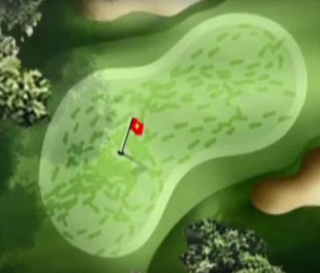

<div class="pages">
  <div data-page="561-vinterbaner-2016" class="page navbar-fixed toolbar-fixed" >
    <div class="navbar">
      <div class="navbar-inner">
        <div class="left">
          <a href="#" class="link back icon-only"><i class="icon icon-back"></i></a>
          <!-- <a href="#" class="back link icon-only"><i class="icon icon-back"></i></a> -->
        </div>
        <div class="center">Vinterbaner fra 2. december</div>
        <!-- <div class="right"></div> -->
        <div class="right">
        </div>
      </div>
    </div>
    <div class="page-content" style="padding-top:45px;">
       <div class="content-block">
          <p>Regler
            Når sommerbanen lukker og vinterbanen åbner, skal der benyttes bærebag og der spilles fra måtter. Dette gøres for at beskytte banerne mest muligt.
            <br /><br />
            Måtterne skal benyttes ved alle fulde slag. Bunkers er undtaget.
            <br /><br /> 
            18 hullers banen
            <br /><br /> 
            Sommerbanen lukker og vinterbanen åbner 2. december kl.10
            <br /><br /> 
            Så blev det november og vi nærmer os en lukning af sommergreens. Sommerbanen har været åben siden marts, og rigtig mange spillere har haft fornøjelse af turen rundt på 18. hullers banen.
            <br /><br />
            Lukning af greens og teesteder vil ske i uge 48 og i uge 47 trækker vi propper op på greens og prikker teesteder og forgreens.
            <br /><br /> 
            Vi beskytter greens og forgreens mod vintersvamp i uge 48. Vi beskytter med et fungicid der lægger sig som en handske over de sprøjtede områder.</p>
            
            <p><b>Lærkeagerbanen (Par 3)</b><br /><br />
              Lærkeagerbanen lukker når Greenkeeperteamet/Baneudvalget vurderer at skaderne bliver for store og for omkostningsrige at rette op på til foråret.
              <br /><br />  
              Når sommerbanen lukker og vinterbanen åbner skal der benyttes bærebag og der spilles fra måtter. Dette gøres for at beskytte banen mest muligt.
              Måtterne skal benyttes ved alle fulde slag. Bunkers er undtaget.
              <br /><br />  
              <b>Her er lidt grundlæggende information om hvorfor vi lukker de følsomme områder inden vinter</b><br /><br />
              Områderne omkring greens er specielt sarte da græsset er etableret på et meget tyndt muldlag (ca. 2-3cm) der er strøet ud over en fed lerjord. Græsset mistrives i sådanne vækstforhold og er ikke stærkt og modstandsdygtigt i våde perioder. Græsset trædes let i stykker og mister sin tæthed, græsset regenererer ikke sig selv eller sætter nye sideskud i vinter tilstand, og man starter sæsonen med komprimerede områder og et græstæppe med store huller i.
              <br /><br />  
              I skaderne vil alle de uønskede græsser/ukrudt/svampe etablere sig. Mange af de uønskede græsser er voldsomt tuedannende, og man står med nye tue områder i løbet af sommeren. Det er indiskutabelt at jo mere spil man tillader i vinterperioden desto større skader står man med til foråret, og jo længere tid går der, før man har skabt en tilfredsstillende putte- og spilleoverflade.
              <br /><br />  
              Det er entydige erfaringer man har fra både Danmark og udlandet.
              <br /><br />  
              Det der sker er, at frosten sætter sig på græsplanten og plantecellerne i bladene fryser til. Træder man på planten sprækker cellerne og græsplanten skades, mister sin farve og risikerer at gå ud.
              <br /><br />  
              Det næste problem kommer når planten er fri for frost, og det øverste jordlag er tøet op, mens jorden hvori rødderne står, er fast. På dette tidspunkt er green meget fugtig og virker løs i overfladen, og man er faktisk i stand til at trække planten midt over ved bare at gå henover green og planten dør med det samme.
              <br /><br />  
              Desuden er spil på greens i vinterperioden en kæmpe stressfaktor for græsset, der opstår nemt skader, græsset mister sin tæthed, græsset bliver modtagelig overfor sneskimmel og andre sygdomme.
              <br /><br />  
              Du kan se en video der forklarer det ved at klikke på billedet eller ved at klikke <a href="https://www.youtube.com/watch?v=RBLvDOaDHcM" class="external">HER</a>.
              <br /><br />  
              God vinter<br />
              Baneudvalget</p>
        </div>
    </div>
    </div>
    </div>
  </div>
</div>
